Ingeniero Multimedia, Product y Digital Designer colombiano. Me muevo cómodo entre la investigación, el diseño y el código.
No te voy a contar mi hoja de vida: prefiero que mi trabajo hable por mí. Por eso cada proyecto cuenta el proceso, no solo el resultado.
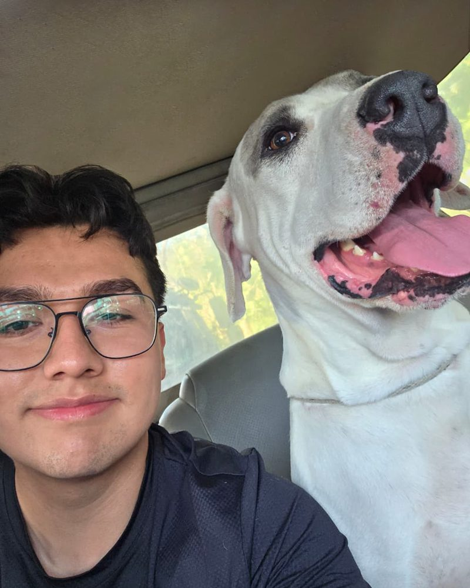
¡Y yo soy Pixel!Cundinamarca, COUX · Motion · Código
Lo que hago
Ayudo a marcas y equipos a convertir ideas en productos digitales claros, útiles y bien hechos. Desde la primera entrevista con usuarios hasta el sitio funcionando en producción.
Del territorio a la taza: el rediseño de Café Pacundí
Un café de origen de Pacho, Cundinamarca, con un sitio congelado en 2019. Lo pusimos al día, mostramos todo lo que Pacundí es, unimos la compra digital con la física y le dimos voz a su lado social.
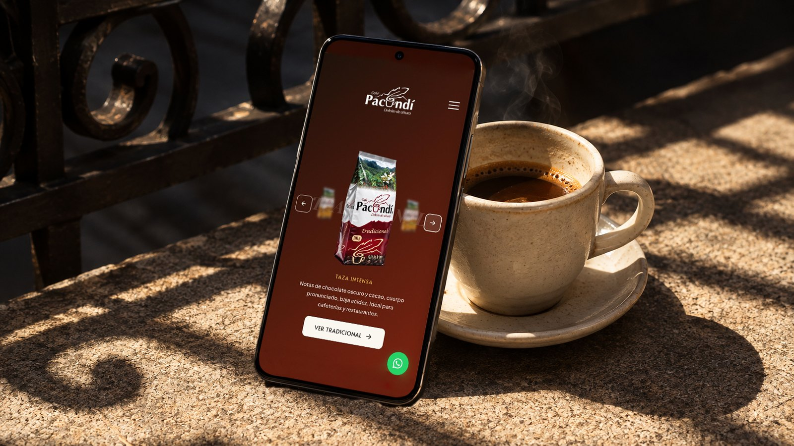
Rediseño web · UX/UI · 2026
Overview
Rediseñé de punta a punta el sitio de Café Pacundí: de la auditoría UX al sitio en producción en septiembre de 2026, con una nueva arquitectura de 9 páginas, un sistema de diseño propio y componentes a la medida sobre WordPress y Elementor gratuito.
Product Designer / UX Engineer, de principio a fin: auditoría, arquitectura, sistema de diseño y desarrollo front end en WordPress.
WordPress 7.0.2PHP 8.1Elementor gratuitoChild theme propioHTML/CSS/JS a la medidaLeaflet.jsFigma
Lo que entregué
Auditoría UX/UI con informe formal
Arquitectura de información
Design system documentado
9 páginas en producción
Componentes reutilizables
Lo que el sitio tenía que contar
Café PacundíExcelso, Tradicional y Típica Silvestre
Agua PacundíDel botellón de 18,9 L a 600 ml, más agua personalizada
Maquila B2BTrilla, tostión, empaque y marca propia
FundamigosAlianza con una fundación animal de Pacho
El punto de partida
Detrás de Pacundí hay 15 años, 300 familias caficultoras del Río Negro y un pueblo, Pacho. Nada de eso se veía en su web: un sitio de 2019 que prometía compra online en una marca que vende por WhatsApp y en tiendas.
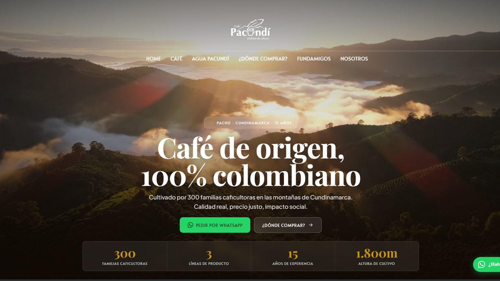
IMG 02b · Home nuevo (2026)
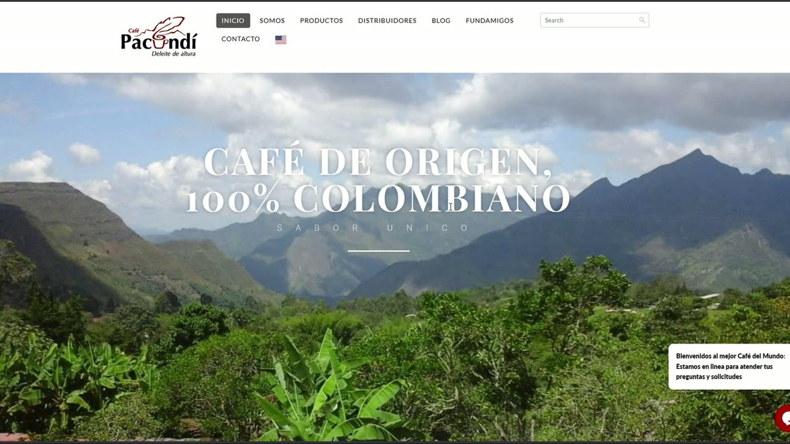
IMG 02 · Home original (2019)20192026
300familias caficultoras
15años de trayectoria
3líneas de negocio
1.800 mde altura
El hallazgo que lo cambió todo
El sitio estaba pensado como tienda en línea, pero Pacundí no vende en línea: vende en puntos físicos, sin domicilios, y toda su conversión digital ocurre por WhatsApp Business.
Research
Una auditoría UX (15 hallazgos, 4 críticos) y un benchmarking con cuatro marcas colombianas dejaron cinco retos.
15hallazgos documentados, entregados en un informe formal y aprobados por el cliente
4335
CríticosAltosMediosTécnicos
Benchmarking
Cuatro marcas de café colombiano, para ver cómo comunican origen, variedades y compra.
Café QuindíoCafé La BastillaCafé MatizCafé OMA
Los cinco retos
Ideación: una regla para ordenar todo
Nueve páginas con una regla: el menú lleva a comprar, al territorio y a Fundamigos; lo institucional va al footer.
Menú principal
Inicio
Café
Excelso
Tradicional
Típica Silvestre
Maquila
Agua Pacundí
¿Dónde comprar?
Fundamigos
Pedir ahora
01
Contacto y distribuidores, una sola página
Para una marca sin domicilios, “contacto” y “¿dónde lo consigo?” son la misma intención.
02
Maquila dentro de Café
Es un servicio B2B derivado del café, no una línea aparte.
03
Nada vacío en el menú
Sin información del cliente, Jugos Pacundí y el blog quedaron fuera.
04
Un solo bloque de distribuidores
Fichas de café y ¿Dónde comprar? comparten el mismo componente, no cuatro copias.
Marca: el sistema de diseño de Pacundí
Que se sienta como abrir una bolsa de café recién tostado: cálido, artesanal, editorial. De seis familias tipográficas exploradas a tres, y una sola regla de forma: 10 px de radio en todo, sin excepciones.
Design system · Café Pacundí v1.0
Terracota#98260BMarca, CTAs, énfasis
Dorado#C8960CNúmeros y acentos
Café oscuro#1C1208Texto y fondos oscuros
Crema#FAF6F0Fondo base
Azul agua#2C5F6FSolo Agua Pacundí
Playfair Display · títulosDeleite de altura
Plus Jakarta Sans · cuerpoCultivado por 300 familias caficultoras en las montañas de Pacho, Cundinamarca.
Alata · botones y labelsPEDIR POR WHATSAPP
1 libra = 500 gramos reales
Solución
Cada componente es un widget HTML/CSS/JS a la medida dentro de Elementor gratuito: control de diseño premium sin pagar licencias. Los marcos blancos muestran los componentes tal como están publicados en cafepacundi.co; cada uno lleva a su página en vivo.
1
Reto 1 · Actualizar el sitio
Un sitio detenido en 2019
El problema. WordPress 5.2, PHP 7.4 y un header que peleaba con Elementor: todo lo nuevo podía romperse.
2019
Contenido de 2019
header.php que choca con Elementor
Tema padre modificado a mano
WordPress 5.2
PHP 7.4
2026
Contenido con datos reales
Elementor + widgets a la medida
Child theme propio
WordPress 7.0.2
PHP 8.1
Backups doblesStagingHeader nuevo
Lo que hicimos
Ordenamos la casa sin cambiar de plataforma: WordPress 7.0.2 y PHP 8.1, child theme propio, backups dobles, staging, un header nuevo y contenido con datos reales.
2
Reto 2 · Mostrar el portafolio
Tres cafés que parecían uno y un agua que nadie veía
El problema. Los tres cafés se veían iguales y Agua Pacundí no existía en la web.
Lo que hicimos
Café y Agua con lugar propio en el menú.
Slider de variedades y tabla comparativa (carrusel en móvil).
Típica Silvestre con un único botón: “Solicitar por encargo”.
“1 libra = 500 gramos reales” como sello de honestidad.
Agua Pacundí con página propia, presentaciones (18,9 L, 6,5 L, 5 L, 3 L, 600 ml), bloque para empresas y su color: el azul agua.
Sitio anterior · Productos2019
Antes: un slider genérico donde las tres bolsas se veían iguales
Pestaña Nuestro Origen: al tocar un municipio de la Cuenca del Río Negro se resalta en el mapa y cambia su ficha
Hasta la paleta habla del territorio: terracota de tierra y cereza, crema en lugar de blanco clínico.
4
Reto 4 · Unir digital y físico
WhatsApp o la tienda de la esquina
El problema. Pacundí vende por WhatsApp y en tiendas, pero el sitio parecía una tienda en línea y no decía dónde comprar.
Visitante
Camino digitalBotón flotante, “Pedir ahora” en el header y mensajes precargados por producto
Camino físico¿Dónde comprar? con mapa, filtros por ciudad y tarjetas
Compra
P
Café PacundíWhatsApp Business
Mensaje precargado desde el botón del producto
Hola, quiero información para comprar Agua Pacundí
Lo que hicimos
Dos caminos, siempre a un clic. El mapa de cafés, supermercados y tiendas aliadas aparece en ¿Dónde comprar? y en cada ficha de café, justo donde el usuario decide.
¿Dónde comprar?: 26 puntos de venta; al filtrar por tipo o ciudad, el mapa se acerca a los puntos y las tarjetas cambian
5
Reto 5 · Lo social
El corazón social: Fundamigos
El problema. La alianza con esta fundación animal de Pacho (unos 140 animales) estaba escondida y podía sonar a un porcentaje de ventas que no existe.
Lo que no decimos
Un porcentaje de cada venta va a Fundamigos
Lo que sí decimos
AlianzaVisibilidadApoyo directo
Lo que hicimos
Fundamigos sube al menú principal, con página propia, bloque “Quiénes son”, componente de donación y presencia en el Home. Todo con una narrativa honesta.
El hero de Fundamigos, en escritorio y celular
EscritorioFotos apiladas que rotan entre adopción y rescateCelularEl mismo carrusel adaptado al celular
Donación directa a la fundación: cada dato se copia con un toque y confirma con “¡Copiado!”
Resultados
Desde septiembre de 2026 el sitio está en línea, completo y funcionando.
1 · Actualizar
Plataforma moderna y segura, sin costos nuevos
2 · Portafolio
Cafés comparables de un vistazo; Agua con identidad propia
3 · Origen
Pacho y el Río Negro como hilo del sitio
4 · Digital + físico
Siempre dos salidas: WhatsApp o un punto cercano
5 · Social
Fundamigos visible y contada con honestidad
Lo que me llevo
Diseñar para el negocio real.El sitio prometía vender online; todo cambió al diseñar para WhatsApp y las tiendas.
El territorio vende.El origen es lo que diferencia a Pacundí.
Lo social se cuenta con honestidad.Genera más confianza que inflar el aporte.
Reutilizar antes de duplicar.Un solo mapa de puntos de venta, donde el usuario decide.
Galería de microinteracciones
Algunos detalles del sitio publicado, grabados tal como se comportan en escritorio y en celular.
Café · MóvilSelector de variedades con su color en el celularCafé · VariedadesCarrusel de las tres líneas con la tarjeta activa al frenteFundamigos · Quiénes sonLas tarjetas se levantan al pasar el cursor
La plataforma de moda online más grande de América Latina tenía filtros confusos, tallas poco claras y un carrito que generaba dudas. Escuché a 22 compradores, puse a prueba la navegación y llevé los hallazgos a un prototipo validado con usuarios.
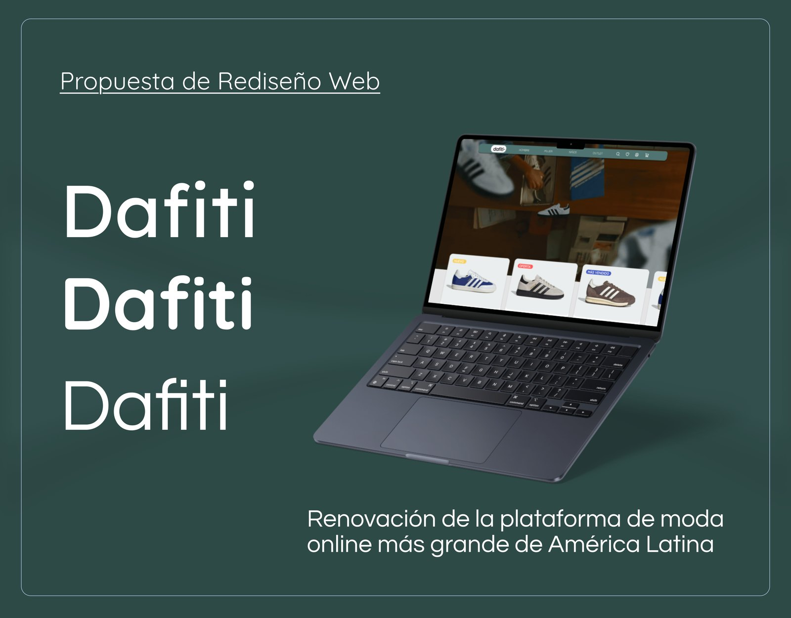
UX/UI · Retail de moda · 2025
Overview
Rediseñé la experiencia de compra web de Dafiti de punta a punta: research con usuarios reales, arquitectura de información, design system propio y un prototipo de alta fidelidad en Figma que pasó por dos versiones gracias a las pruebas de usabilidad.
Proyecto académico Desarrollado en el curso Diseño UX/UI Avanzado de CoderHouse. No fue un encargo de Dafiti.
Contexto
Diseño UX/UI Avanzado · CoderHouse
Mi rol
Product Designer UX/UI
Periodo
Agosto a noviembre de 2025
Entregable
Prototipo navegable en Figma (V1 y V2)
22personas respondieron la encuesta
10participantes en el tree testing
3pruebas moderadas con el prototipo
2versiones del prototipo, V1 y V2
Qué es Dafiti
Tienda online de moda, calzado y accesorios para hombres, mujeres y niños, con filtros de búsqueda, varios medios de pago, envíos y devoluciones. Su experiencia está pensada para convertir visitas en ventas.
100.000productos activos
700marcas aliadas
AutoStoreel más grande del mundo
Centro de distribuciónde moda más grande de América Latina
01 · El punto de partida
Un catálogo enorme, difícil de recorrer
En las pruebas con usuarios aparecieron tres dolores. Los tres frenan la compra en el momento en que la persona ya quiere comprar.
Claridad al comprarLas personas necesitan confirmar sus acciones, como eliminar un producto o finalizar la compra, para no quedarse con dudas.
Navegación más rápidaLos filtros y la búsqueda no son eficientes, así que encontrar un producto toma más tiempo del necesario.
Menos abandono de carritoUn checkout más visible y simple ayuda a que la persona termine la compra sin trabas.
El problema, en una frase
Buscar, filtrar y revisar el carrito genera confusión. Eso lleva a abandonar productos y baja la conversión, sobre todo entre usuarios jóvenes que compran desde canales digitales.
02 · Research
Tres métodos, una misma pregunta
¿Dónde se pierde la gente al comprar moda online? Lo respondí comparando competidores, encuestando compradores y midiendo la navegación con tree testing.
Desk research: cómo lo resuelve la competencia
Criterio
Zara
Éxito Moda
Mercado Libre
Estética visual
Muy elegante, estilo editorial, pero poco intuitivo
Funcional, ligada al retail tradicional
Moderna, limpia y amigable, con UI actualizada
Facilidad de navegación
BajaSin orientación clara, menús confusos
MediaMenú extenso pero accesible
AltaNavegación simplificada, menús por categoría
Filtros y búsqueda
Limitados o poco visibles
Presentes, pero poco eficientes
Automáticos, visibles y combinables
Información de producto
Centrada en imágenes, pocos detalles técnicos
Adecuada, con representaciones físicas claras
Descripciones ricas, guías de talla y valoraciones
Confianza en el proceso
Visual atractivo pero confuso, falta feedback
Fuerte gracias al retail físico
Feedback visual claro: confirmaciones, errores
Lo que me llevé: Mercado Libre marcó la referencia con filtros automáticos, información de producto completa y confirmaciones visibles.
Encuesta a compradores
22 personas
15 preguntas
Google Forms, asincrónica
Qué compran en tiendas como Dafiti
Calzado72,7 %
Ropa casual13,6 %
Ropa deportiva9,1 %
Accesorios4,5 %
¿Encontraste lo que buscabas con el buscador?
Sí, fácilmente61,9 %
Más o menos, fue algo difícil28,6 %
No lo encontré9,5 %
16 a 24años, el rango principal
41 %compra una vez al año o menos
55 %volvería a comprar en Dafiti
55 %no está conforme con las guías de talla
“Es confuso ver las tallas y guías de talla del producto.”
“A veces falta detallar más el tema de materiales y composición.”
“La información de las tallas es insuficiente, sobre todo para gente que no tiene idea de medidas.”
Lo que me llevé: el 72,7 % compra calzado, y es justo ahí donde más duelen las tallas. El 30 % además sintió que faltaba información de materiales y durabilidad.
Tree testing: ¿la gente encuentra el camino?
Probé la arquitectura original con dos tareas. Hay varias rutas válidas para llegar a cada opción, así que medí cuáles usa la gente y dónde se desvía.
Tarea 1
“Buscas unos tenis deportivos para tu mamá. ¿Por dónde navegarías?”
60 %20 %20 %
Ruta ideal sin desvíos
Llegó, pero se desvió
No llegó
80 %de éxito
~24 stiempo promedio
Quienes fallaron terminaron en Sneakers para ella, que es calzado de diario y no deportivo. Había categorías con nombres ambiguos o repetidos.
Ver el diagrama de rutas
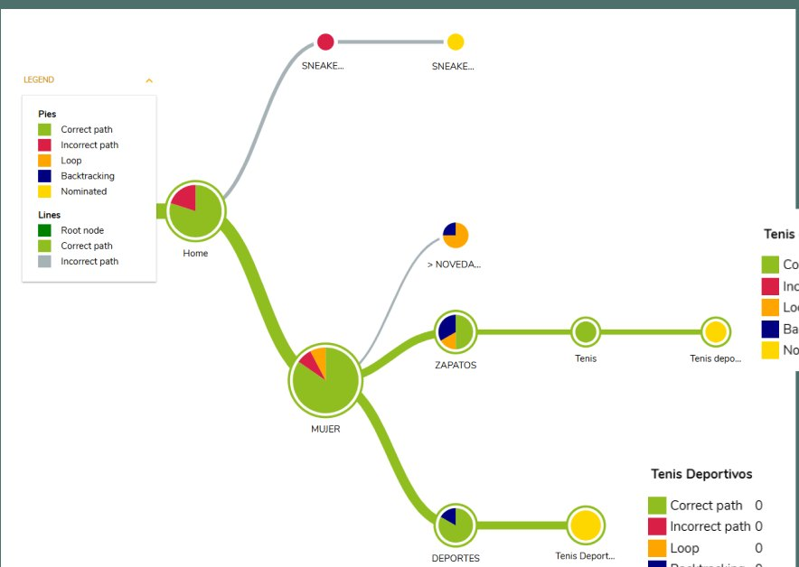
Tarea 2
“Quieres revisar el estado de una compra reciente. ¿Dónde irías?”
30 %30 %40 %
Ruta ideal sin desvíos
Llegó, pero se desvió
No llegó
60 %de éxito
28 smediana
La ruta ideal pedía cinco niveles: Inicio, Registrarse, Clientes registrados, Mis pedidos y Ver pedido. Un 30 % se quedó en el carrito buscando su pedido.
Ver el diagrama de rutas
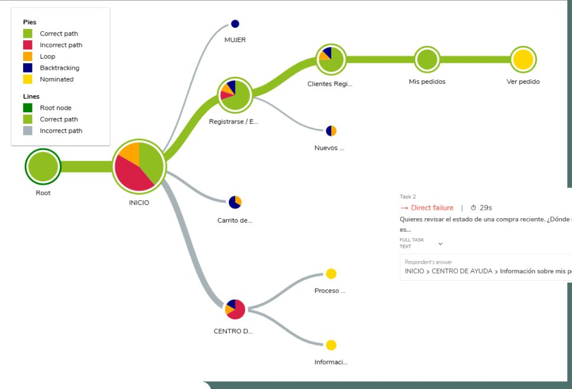
Insight
En la encuesta, el 61,9 % dijo encontrar lo que buscaba. En el tree testing, 4 de cada 10 no llegaron a su pedido. Lo que la gente cree y lo que hace no siempre coincide.
03 · A quién le diseñamos
Conoce a Laura
Con los datos de la encuesta armé una persona que resume al comprador típico. Ella guió las decisiones del rediseño.
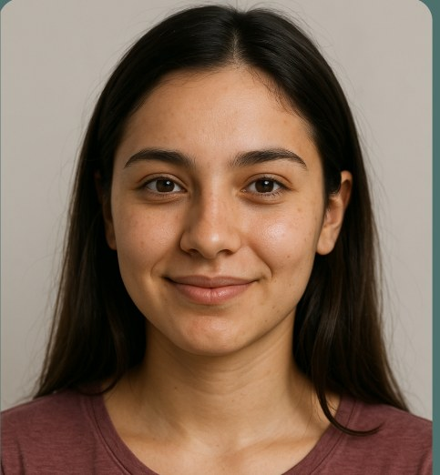
Laura Rodríguez21 años · Estudiante universitaria · Colombia, zona urbanaExperiencia comprando online: media
Compra 1 o 2 veces al año, sobre todo en promociones. Prefiere el calzado porque le resulta más fácil elegir por talla y estilo. Navega desde el celular, aunque paga desde el computador si la carga o la validación fallan.
Necesita
Encontrar rápido por color, talla o precio
Una tabla de tallas confiable
Pagar sin fricciones desde el celular
Seguir su pedido desde que compra
Le frustra
Filtros que no cambian bien los resultados
Poca información de tallas y materiales
No saber cuándo llega su pedido
Quiere
Calzado actual a buen precio
Recibir lo que vio en la web
Comprar sin sentirse perdida
Repetir si la experiencia es clara y segura
El viaje de Laura comprando tenis
Ocho pasos, cuatro etapas. Toca cada punto para ver qué dijeron los usuarios en ese momento.
Ingreso a la web
Búsqueda y filtros
Selección de productos
Cuenta y pagos
PositivoNeutralNegativo
Dónde se cae la experiencia
Los picos negativos están en los filtros, en la ficha del producto y en el seguimiento del pedido. Ahí se concentró el rediseño.
04 · Definición
Del hallazgo a la hipótesis
Ordené todo en un Lean UX Canvas: qué creemos, cómo lo vamos a probar y qué esperamos que pase.
Si
reorganizamos los filtros y la jerarquía de navegación
entonces
los usuarios encontrarán más rápido lo que buscan.
Si
mejoramos la estructura del carrito y sumamos mensajes de confirmación
entonces
bajará el abandono.
Si
la guía de tallas y la información del producto se ven mejor
entonces
el usuario confiará más al comprar.
Metas de negocio que planteamos
15 %más conversión en compras de calzado
20 %menos abandono del carrito
NPSmás satisfacción del usuario móvil
Son objetivos del canvas, pensados para medirse si el rediseño se implementara. Un prototipo académico no puede medirlos.
Matriz FVD: qué hacer primero
Crucé cada idea según cuánto la desean los usuarios y qué tan factible es. Así salió el alcance del prototipo.
¿Cuánto lo desean los usuarios? →
Tal vez
Aplicar filtros automáticamente al seleccionarlos
Rediseñar el carrito con mejor separación, jerarquía y confirmaciones
Quitar el botón “Compra rápida” para evitar ambigüedades
¡Lo haremos!
Reorganizar la jerarquía visual y la navegación de categorías y filtros
Un home más limpio, sin tanto ruido visual
Separar y hacer visible la guía de tallas
Mensajes de confirmación en acciones concretas
No por ahora
Sección de valoraciones de productos
Tal vez
Acceso fijo a los filtros desde el header
Aprovechar todo el ancho de la pantalla
¿Qué tan factible es? →
05 · Arquitectura de información
Quitar también es diseñar
Mapeé el árbol completo del sitio y lo reorganicé con lo que mostró el tree testing: menos secciones repetidas y un atajo directo para lo que más costó encontrar.
154nodos en el árbol original
139nodos en el árbol nuevo
15nodos repetidos que salieron
Home
SneakersRepetía lo que ya está en Zapatos
MujerSin la rama Novedades
HombreFanáticos ⚽ pasa a Deportes
Outlet
Niños
Fanáticos ⚽Se mueve dentro de Deportes
Registrarse / Entrar
Mujer
HombreDeportes incluye Fanáticos ⚽
Outlet
Sigue tu pedidoNuevo atajo, sin iniciar sesión primero
Niños
Registrarse / Entrar
Lo que cambié
Agregué el acceso directo Sigue tu pedido para ahorrar pasos, tal como pedían los usuarios del tree testing.
Eliminé las secciones que repetían información de otras: Sneakers y Novedades.
Saqué las subpáginas de marcas como sección: ya existen como filtro de búsqueda.
Moví Fanáticos ⚽ dentro de Deportes.
Sumé reseñas de compras hechas por otros usuarios.
El camino hacia “mi pedido”
Antes · 4 clics
Inicio
Registrarse / Entrar
Clientes registrados
Mis pedidos
Ver pedido
Después · 3 clics
Inicio
Sigue tu pedido
Clientes registrados
Historial de pedidos
Quien compró sin cuenta puede entrar con su número de pedido.
06 · Marca y design system
Una voz y un sistema para la nueva Dafiti
Antes de dibujar pantallas definí por qué existe la marca y cómo habla. Después armé el design system en Figma, desde los átomos hasta los componentes.
QuéCómoPor qué
Por qué
Transformar la forma en que las personas viven y expresan su estilo, con moda accesible, inclusiva y sostenible que inspire confianza.
Cómo
Una experiencia digital intuitiva: navegación clara, compra rápida, envíos ágiles, devoluciones sencillas y una variedad curada para todos los estilos, tallas y presupuestos.
Qué
La plataforma líder en moda, calzado, accesorios y belleza en Brasil y Colombia, con más de 700 marcas y 100.000 productos.
Matriz de voz
Concepto
Genera seguridad con mensajes consistentes y coherentes.
Verbosidad
Breve y precisa, sin exceso de palabras.
Vocabulario
Palabras que dan confianza: “seguro”, “garantía”, “respaldo”.
Gramática
Frases cortas en primera persona del plural: “Hemos recibido tu pedido”, “Te enviaremos una notificación”.
Puntuación
Pocas comas para mensajes más cortos. A veces, un emoji en mensajes directos.
Mayúsculas
En nombres propios, marcas y llamados a la acción, sin exceso.
Concepto
Comunica de forma directa, sin ambigüedades ni adornos.
Verbosidad
Concisa y al punto, sin redundancias.
Vocabulario
Lenguaje sencillo: “fácil”, “rápido”, “claro”.
Gramática
Frases cortas que invitan o explican: “Haz seguimiento desde el botón Detalles de entrega”.
Puntuación
Precisa, guía al lector sin recargar el texto.
Mayúsculas
Solo en títulos o énfasis clave, nunca de forma abusiva.
Concepto
Refleja la amplitud y riqueza del catálogo de marcas y productos.
Verbosidad
Dinámica, con énfasis en opciones y posibilidades.
Vocabulario
Palabras de amplitud: “variedad”, “selección”, “para todos los estilos”.
Gramática
Inclusiva, abarca opciones y perfiles.
Puntuación
Comas y conectores que transmiten amplitud.
Mayúsculas
Para destacar categorías o marcas, sin excesos.
El design system
Dafiti · Design System en Figma
Paleta
Principales
Acentos
Textos
Destacados
Verdes y azules transmiten confianza y frescura. Naranjas, rojos y amarillos guían la atención hacia las acciones clave.
Tipografía · Quicksand
Hero 60Headline 36Headline 24Body 16 · Legible y con formas redondeadas que dan dinamismo.META · LABEL 12
Grilla
12 columnas
Proporcional ancho
84 px margen
24 px gutter
Componentes · radio 15 px · sombra Y 5, 25 %
dafiti
Nuevo
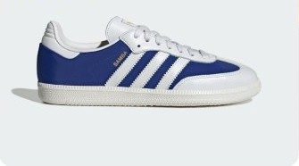
Tenis Samba OG azulAdidas
+6$ 491.900
Número de tarjeta0000 0000 0000 0000Nombre del titularVencimientoCVV
Componentes reconstruidos a partir del design system de Figma: pasa el mouse por la tarjeta y el botón, o abre el desplegable de pago. Íconos adaptados de Phosphor Icons, lineales y con bordes levemente redondeados.
07 · Solución
Del wireframe al prototipo
Primero resolví la estructura en wireframes de baja fidelidad, con foco en la vista de producto y tallas. Después llevé esa base al prototipo navegable en Figma con el design system aplicado.
Wireframe · vista de producto y tallasBaja fidelidad
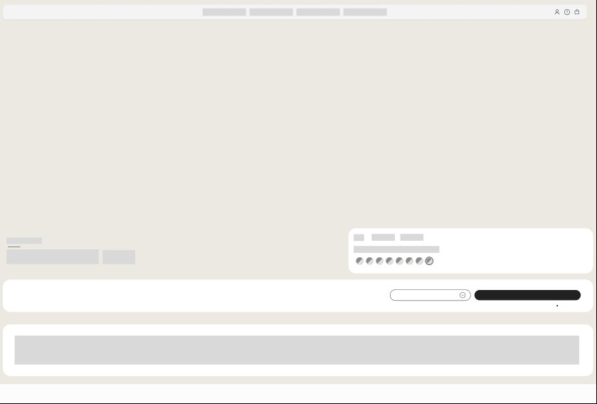
01
Header fijo y limpio
Cuatro categorías principales y accesos a búsqueda, favoritos, cuenta y carrito siempre a la vista.
02
Tarjetas que informan
Etiquetas de Nuevo, Oferta y Más vendido, colores disponibles y precio con descuento visible.
03
Tallas a la vista
La guía de tallas va separada y visible en la ficha del producto, no escondida en un enlace.
04
Carrito sin dudas
Productos separados, jerarquía clara en cada ítem y confirmación antes de eliminar.
Dafiti · prototipo V1 · HomeAlta fidelidad
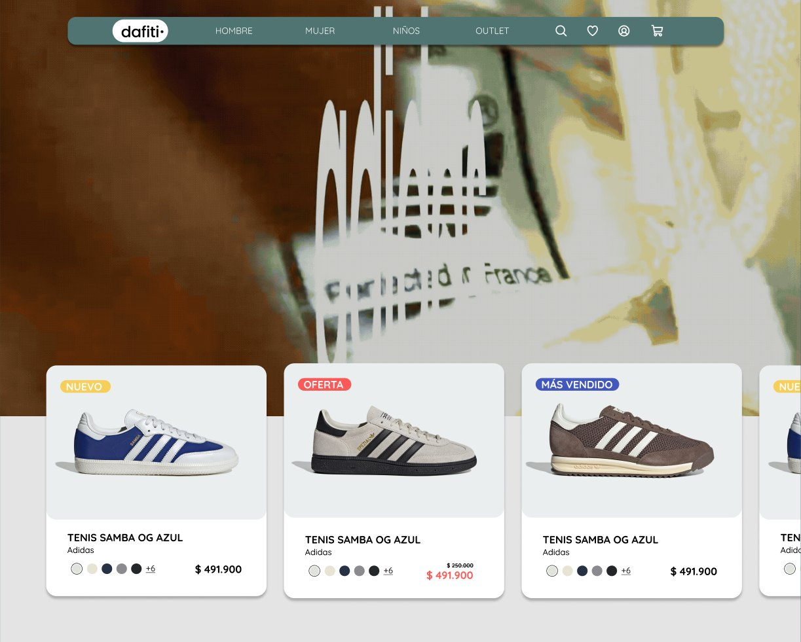
Prototipo V1, la versión que llevé a las pruebas de usabilidad.
Demo reel del rediseño: la nueva interfaz en movimiento.
08 · Testing
Lo probé con usuarios antes de darlo por terminado
Hice un test moderado remoto con 3 usuarios. Les pedí pensar en voz alta mientras resolvían las mismas dos tareas del tree testing, para ver dudas, rutas y clics de más.
ParticipanteTarea 1 · tenis deportivosTarea 2 · estado del pedido
Usuario 125 s12 s
Usuario 218 s10 s
Usuario 320 s11 s
Tree testing, árbol original
Encontrar el pedido: 28 s de mediana y 4 de cada 10 sin llegar.
Prototipo V1, nuevo árbol
3 de 3 lo encontraronentre 10 y 12 s
Son pruebas distintas y con muestras pequeñas, así que no es una comparación de laboratorio. Aun así, la tarea que más costaba pasó a ser la más rápida.
Lo que dijeron y lo que ajusté para la V2
FichaEl botón de talla 8.5 no se veía seleccionado.
FichaFaltaba un botón para volver en la vista de zapatos.
FichaEl selector de cantidad necesitaba mejoras.
CompraEl botón para salir de la vista de compras debía ir arriba a la derecha.
CompraAl finalizar, el botón decía “Home” en vez de “Finalizar compra”.
CompraHacía falta una vista que confirmara la compra.
UITransparencias y estados hover poco claros en textos y en el botón de envío.
Resultado
Con estos ajustes armé el prototipo final V2, el que abre este caso: navegación reordenada, tallas visibles, confirmaciones en el carrito y un atajo directo al pedido. Ver el prototipo en Figma ↗
09 · Cierre
Lo que me llevo
Medir lo que la gente hace.La encuesta decía que el buscador funcionaba. El tree testing mostró que 4 de cada 10 no encontraban su pedido. Combinar métodos evitó diseñar sobre una impresión.
Quitar también es diseñar.Sacar 15 nodos repetidos y sumar un solo atajo hizo más por la navegación que cualquier pantalla nueva.
La confianza está en los detalles.Tallas claras, materiales visibles y una confirmación antes de borrar algo son lo que hace que alguien termine la compra.
Probar temprano, con poco.Tres pruebas moderadas bastaron para encontrar errores concretos y corregirlos antes de la versión final.
Caso de estudio · Museo de Anatomía UMNG
Un museo que existía, pero nadie conocía.
Lideré a un equipo de ocho personas para convertir una colección de piezas anatómicas reales, guardada en una sala aislada del campus de Cajicá, en una experiencia digital que cualquiera puede recorrer desde su computador o su celular.
Museo de Anatomía UMNG · InicioFigma
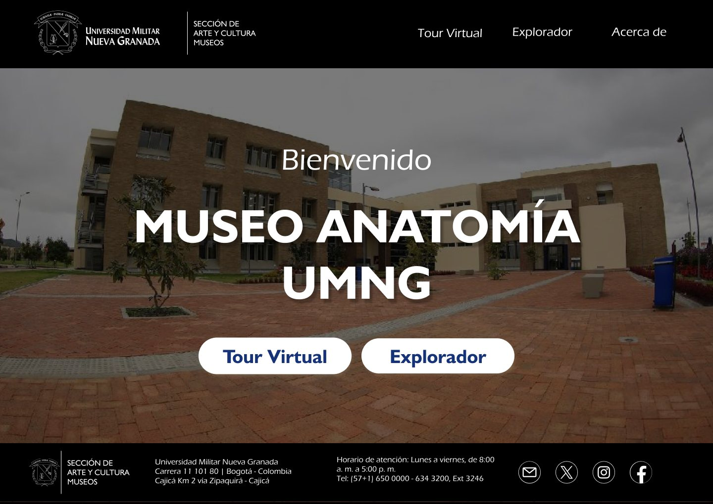
UX/UI · AR, VR y 3D · 2024
Overview
La Universidad Militar Nueva Granada conserva una colección de piezas anatómicas reales con un alto valor científico y educativo. El problema es que vivían en formol, en una sala aislada del campus de Cajicá, y la mayoría de la comunidad universitaria ni siquiera sabía que el museo existía.
La División de Museos nos planteó un reto concreto: darle visibilidad a esa colección. Lideré a un equipo de ocho personas para convertir el museo en una experiencia digital que cualquiera pudiera recorrer desde su computador o su celular.
Proyecto académico con cliente real Ingeniería Multimedia, asignatura Integración Multimedia: Aplicaciones 3D.
Cliente
División de Museos, UMNG
Mi rol
Director de proyecto · Diseñador UX/UI
Duración
15 semanas, de febrero a mayo de 2024
Estado
Prototipo entregado, en transición a producción
Herramientas
FigmaUnityNeedle EngineThree.jsReactMaya
01 · El problema
A la colección no le faltaba valor, le faltaba alcance
Al analizar la situación con el cliente, identificamos que el museo tenía tres barreras.
Acceso limitadoEstaba en Cajicá, fuera del alcance de buena parte de la comunidad.
Promoción casi inexistenteEl presupuesto de difusión era prácticamente nulo.
Contenido estáticoLa experiencia dependía por completo de estar presente en la sala.
02 · A quién diseñamos
Dos perfiles, las mismas barreras
Definimos dos arquetipos con el equipo y el cliente.
17 a 30 años
Estudiantes
Movidos por la curiosidad sobre el cuerpo humano.
35 a 60 años
Funcionarios
Con poco tiempo disponible y poca familiaridad con experiencias 3D.
Lo que compartían
No poder desplazarse a Cajicá
Depender de su dispositivo o su conexión
En algunos casos, rechazo ante la idea de ver piezas cadavéricas reales
La oportunidad
El formato digital permite acercarse a las piezas con una distancia que la sala física no ofrece.
03 · Estrategia
Dos formas de visitar un museo
Tras revisar referentes como el Museo de Anatomía de Heidelberg y el proyecto Visible Human, estructuramos la experiencia en dos caminos complementarios.
Para quien quiere estudiar
Cada pieza se ve de forma individual, con su modelo 3D interactivo e información anatómica detallada.
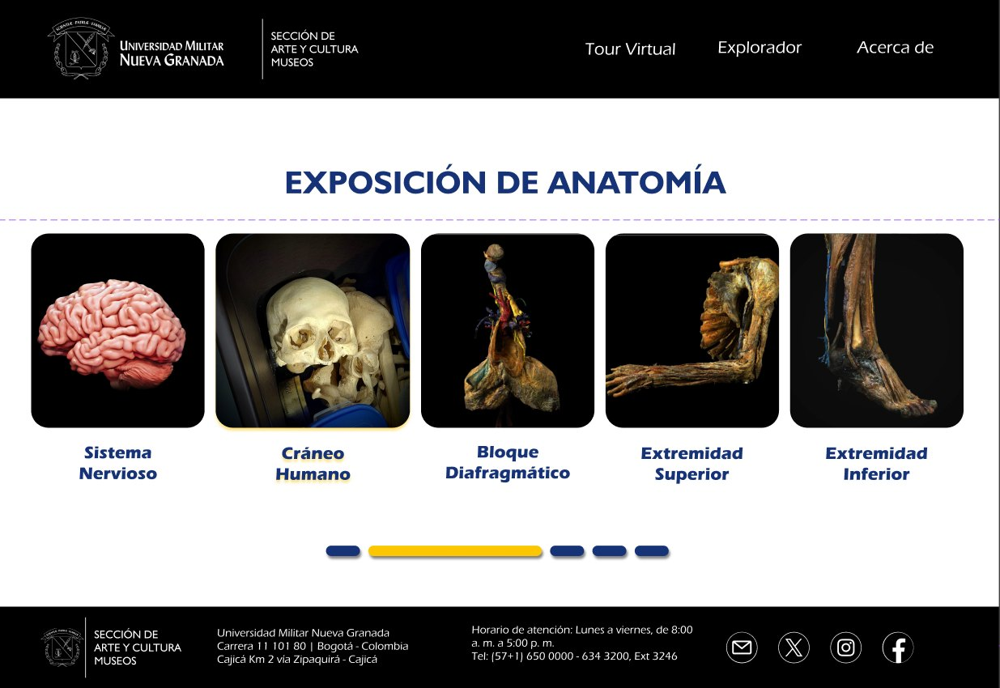
Para quien quiere vivir la visita
Un espacio 3D navegable, como un videojuego, que reproduce la sala del museo.
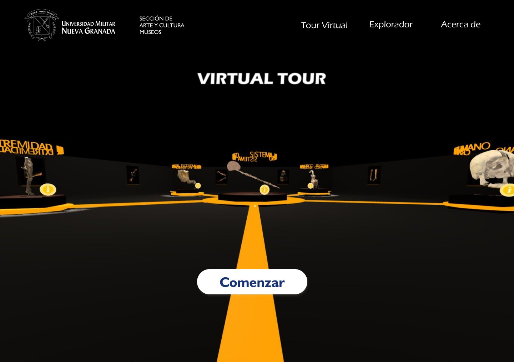
Una narrativa cíclica de cinco piezas
Diseñé el mapa del espacio: una sala hexagonal donde cada pieza tiene su punto de exhibición y un orden de visita claro.
Cerebro
Cráneo
Bloque diafragmático
Extremidad superior
Extremidad inferior
Esquema del orden de visita.
04 · Diseño de interfaces
La pieza siempre es la protagonista
Ese fue el requerimiento principal del cliente. Construí el sistema visual sobre la identidad institucional de la UMNG, azul profundo con acentos amarillos, y diseñé cada pantalla para que la interfaz se retirara del camino.
Home
Una entrada directa con la foto del campus y solo dos decisiones: Tour Virtual o Explorador. Desde el primer segundo, el usuario elige cómo quiere vivir el museo.
Galería
La exposición se presenta como un carrusel de las cinco piezas, para reconocer de un vistazo qué contiene el museo antes de profundizar en una.
Vista detalle: una vitrina digital
Cada pieza flota sobre un halo azul que la aísla del fondo blanco, como si estuviera iluminada en una vitrina. Recorre la pantalla dentro del marco o toca cada punto.
Explorador · Sistema nervioso centralEscritorio
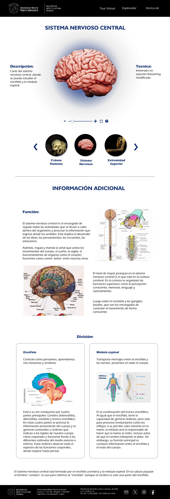
Halo de vitrinaLa pieza flota sobre un halo azul que la separa del fondo.
Descripción y técnicaA los lados, la descripción y la técnica de conservación.
Controles mínimosZoom por slider, pantalla completa y un botón de ayuda para quien nunca ha manipulado un modelo 3D.
Carrusel de piezasSalta a las piezas vecinas sin volver atrás.
Información en capasPrimero la función general, en bloques de texto e ilustración alternados.
División de la piezaTarjetas como encéfalo y médula espinal, y al final un dato de cierre.
Quien solo tiene curiosidad no se abruma, y quien estudia encuentra profundidad.
Acerca de
La página presenta el sistema de colecciones de la universidad. Exploré varias versiones de tarjetas que se expanden para revelar las subcolecciones de cada una, así el Museo de Anatomía se entiende como parte de un patrimonio más amplio.
Responsive
La vista detalle se diseñó en escritorio, tablet y móvil. En pantallas pequeñas la información se reorganiza en una sola columna y la navegación pasa a un menú desplegable.
Escritorio
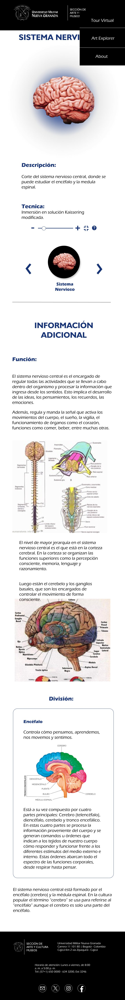
Los dos marcos se desplazan juntos para comparar cómo se reorganiza la misma información.
05 · Recorrido virtual
Un punto amarillo para cada pieza
Cada pieza del espacio 3D tiene un punto de información amarillo que despliega una tarjeta con nombre, descripción, función y técnica. La construí como un componente reutilizable para las cinco piezas.
Recorrido virtual · CráneoEscritorio
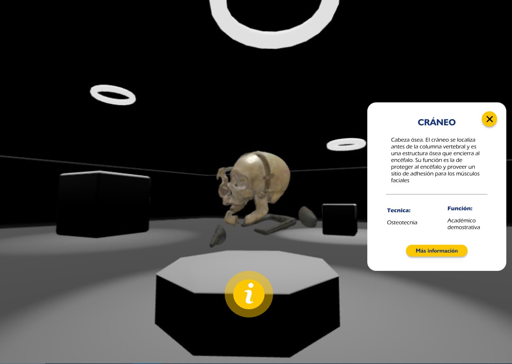
Dos modos en el celular
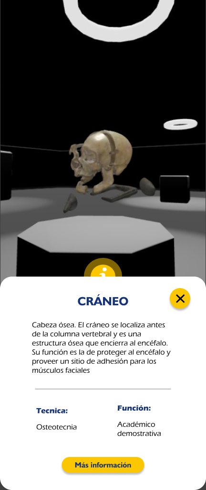
En vertical, la tarjeta sube como hoja inferior y deja ver la pieza arriba.
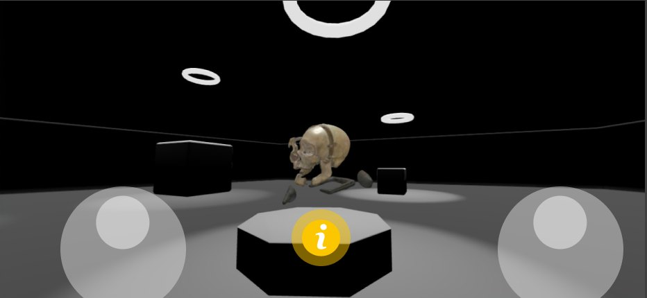
En horizontal, la navegación pasa a dos joysticks táctiles: uno para moverse y otro para mirar.
06 · Detrás de las interfaces
Diseñar 3D para la web es diseñar para el rendimiento
Las piezas se digitalizaron con un escáner de fotogrametría láser, pero los modelos resultantes tenían demasiados polígonos para cargar en un navegador.
EscaneoFotogrametría láser
Limpiezade la malla
Reescaladoa medida web
Triangulaciónliviana, sin perder fidelidad
Navegadorlisto para cargar
Excepción
Las piezas conservadas en frascos con líquido no se podían escanear, porque el líquido distorsionaba la captura. En esos casos decidimos modelarlas desde cero.
El recorrido pasó por un proceso similar en Needle Engine para que fuera fluido en dispositivos comunes.
Texturas a 2KSombras simplificadasMapas de luz precalculados
07 · Validación
Dos rondas de pruebas con usuarios
El hallazgo más claro fue que la experiencia era notablemente más fluida en escritorio que en móvil. Eso orientó los ajustes de optimización y de interfaz para pantallas pequeñas.
Escritorio
Experiencia más fluida
Móvil
Menos fluida: aquí se enfocaron los ajustes de optimización e interfaz.
08 · Resultado
Un prototipo listo para pasar a producción
Entregamos a la universidad un prototipo funcional, con la página y el recorrido en versión demo, junto con el sistema de interfaces completo en Figma. La arquitectura quedó pensada para que el museo pueda seguir sumando piezas a su colección digital.
5piezas digitalizadas
2caminos de experiencia
2rondas de prueba
7personas en el equipo
09 · Cierre
Lo que me llevo
01
Liderar un equipo colaborativo
Fui el líder de un equipo de ocho personas. Coordinar el trabajo de todos y mantener una misma visión del proyecto fue tan importante como diseñar.
02
Buscar nuevas herramientas
Los modelos 3D se hicieron con un escáner y técnicas de fotogrametría. Encontrar y aprender la herramienta adecuada fue parte del proyecto.
03
Prototipar para un cliente institucional
Diseñar para la universidad pidió prototipos claros, capaces de mostrar y validar cada decisión con la institución.
Colección · Motion graphics y video
Ideas que se mueven: motion graphics y video
Piezas animadas en After Effects e Illustrator para presentar productos, comunicar en redes sociales y contar mi propia marca.
After EffectsIllustrator2025
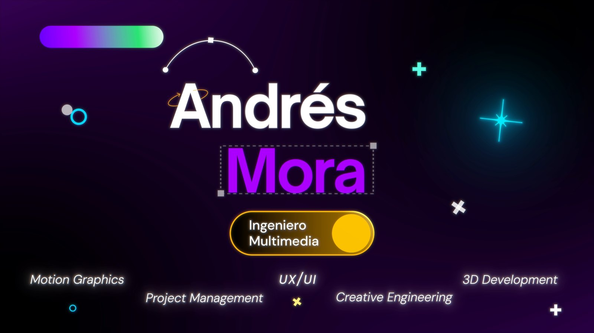
01 · Producto digital
Demo reel del proyecto Dafiti
Video demostrativo del rediseño web de Dafiti: resalta la identidad visual, fortalece la experiencia de usuario de la marca y muestra la nueva interfaz.
Formatos cortos animados, diseñados principalmente en After Effects, que usan motion graphics para comunicar mensajes de forma dinámica, visual y efectiva en redes sociales.
Pinauto es un taller de latonería y pintura en Zipaquirá. Su imagen no estaba a la altura de su trabajo. Diseñé una identidad nueva, el manual de marca, la papelería, el brochure de servicios y la línea gráfica de sus redes.
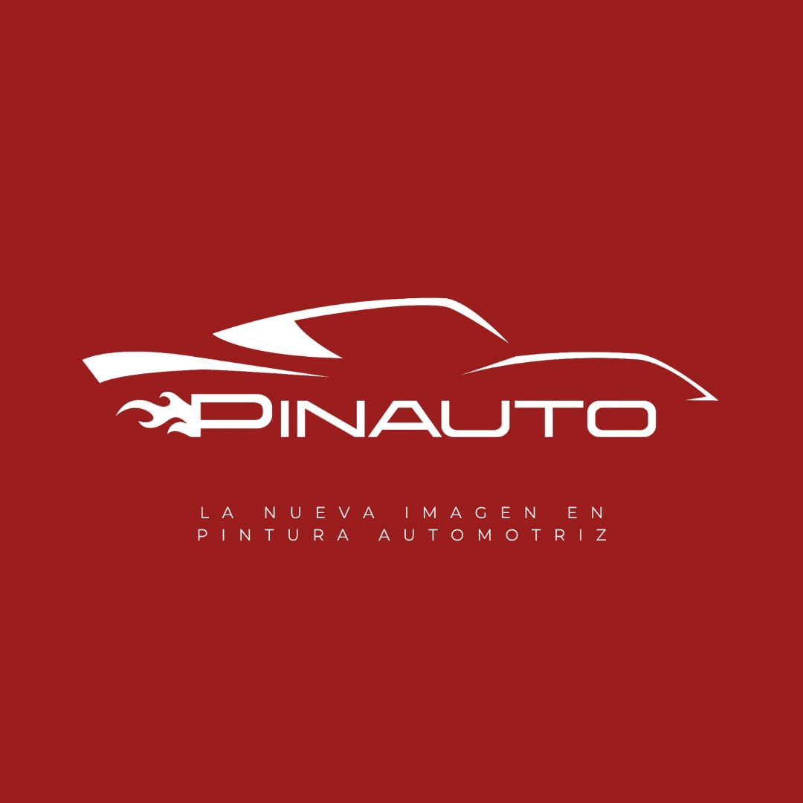
Branding · Pintura automotriz · 2024
Overview
Rediseñé la identidad de Pinauto de principio a fin: un imagotipo nuevo, su manual de marca, la papelería, la dotación del taller, un brochure con los servicios y las piezas para Instagram y TikTok.
De lo académico a lo real Empezó como proyecto académico y terminó con Pinauto como cliente real.
Cliente
Pinauto, taller de pintura automotriz (cliente real)
Ubicación
Portachuelo, Zipaquirá
Año
2024
Entregables
Manual de marca, papelería y redes
Qué hace Pinauto
Repara carrocerías, aplica pintura automotriz de alta calidad y hace tratamientos de pulido y porcelanizado. Atiende a clientes de Zipaquirá y de la región.
LatoneríaPinturaPulidoPorcelanizadoRestauración
01 · El punto de partida
Un buen taller con una imagen dispersa
La marca anterior usaba un logo en letra cursiva y la foto de un deportivo rojo en la tarjeta, y otro logo en azul en el aviso del local. Cada pieza hablaba distinto.
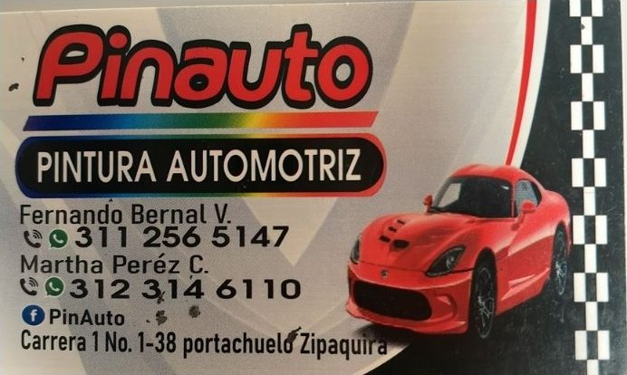
Antes · Tarjeta
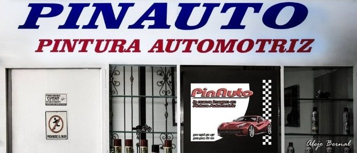
Antes · Aviso del local
Pinauto necesitaba una identidad nueva para:
Reforzar su posicionamiento en un mercado competitivo.
Ganar visibilidad y atraer nuevos clientes.
Alinear su imagen con sus valores: calidad, profesionalismo y confianza.
Comunicar sus servicios de forma clara.
El reto, en una frase
Que la marca transmita la misma calidad y confianza que el taller entrega en cada vehículo.
02 · Para quién
Juan, el dueño que cuida su carro
El buyer persona guió el tono de la marca y de las piezas: alguien con poco tiempo, que quiere un acabado impecable y desconfía de los talleres informales.
JR
Juan Rodríguez35 a 50 años · Empresario o profesional independiente
Intereses
Mantener su vehículo en excelente estado, confiar en talleres de calidad y encontrar un buen equilibrio entre precio y profesionalismo.
Motivaciones
Ahorrar tiempo y garantizar un acabado impecable en cada reparación.
Frustraciones
Talleres poco profesionales, resultados de baja calidad y poca claridad sobre precios y servicios.
03 · Identidad
Un deportivo en un solo trazo
El imagotipo dibuja la silueta de un deportivo con pocas líneas, y de la P sale una llama. Lo acompaña el claim «La nueva imagen en pintura automotriz». Tiene versión principal para fondos claros y oscuros, una monocromática para impresiones a una tinta, sellos o bordados, y una versión con claim.
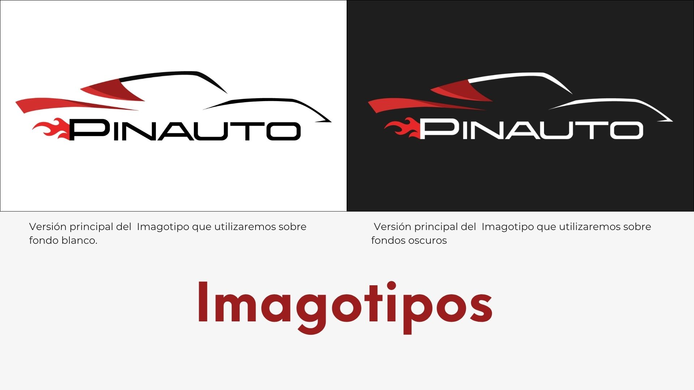
📌 Página 11 del Canva: imagotipos
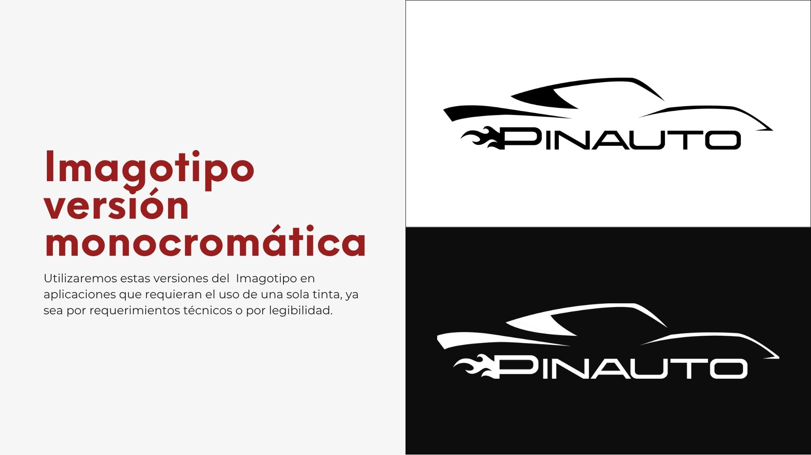
📌 Página 12 del Canva: versión monocromática
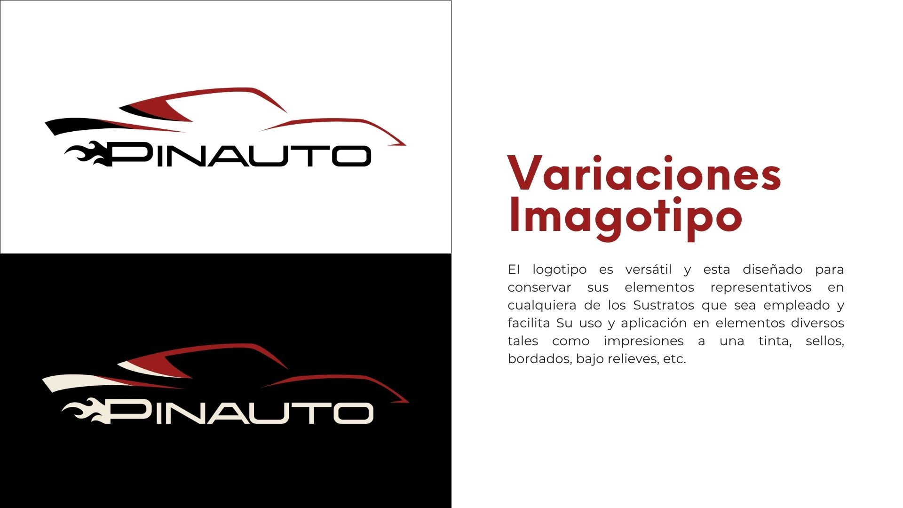
📌 Página 13 del Canva: variaciones
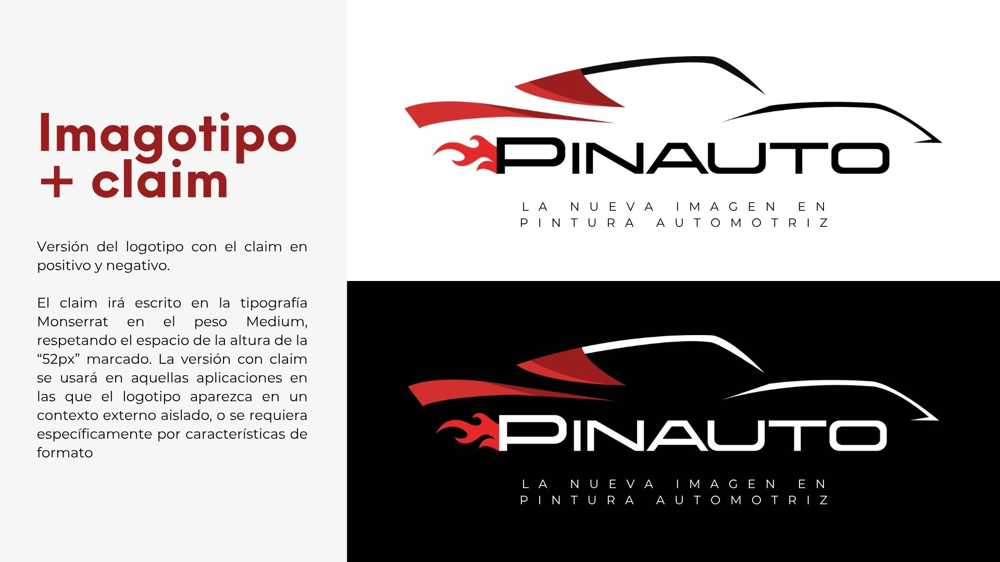
📌 Página 14 del Canva: imagotipo con claim
Monograma
Para espacios pequeños, como el perfil de redes o la esquina de cada post, la marca se reduce a la P con la llama, en positivo, negativo y crema.
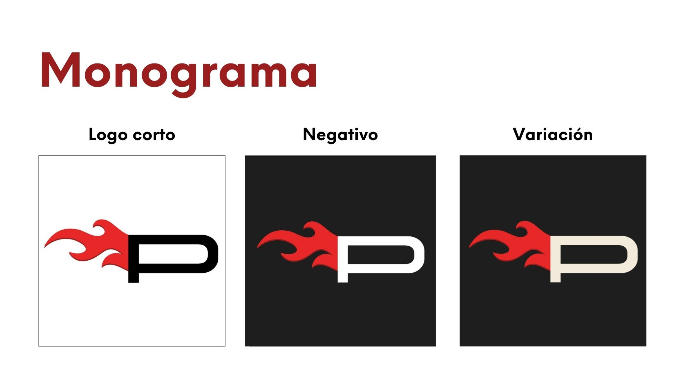
📌 Página 15 del Canva: monograma
04 · Sistema visual
Rojo, crema y negro
Dos rojos de pintura, un crema que suaviza y el negro del taller. Para los titulares y el logotipo, Yapari, una tipografía ancha y técnica. Para los textos y el claim, Montserrat.
Manual de marca · Pinauto
Rojo profundo#9B1D1D
Rojo vivo#D32F2F
Crema#F2EBDC
Negro#010101
Titulares y logotipoYapariThin · Medium · Bold (muestra real en la imagen de abajo)
Textos y claimMontserratThin · Medium · Bold
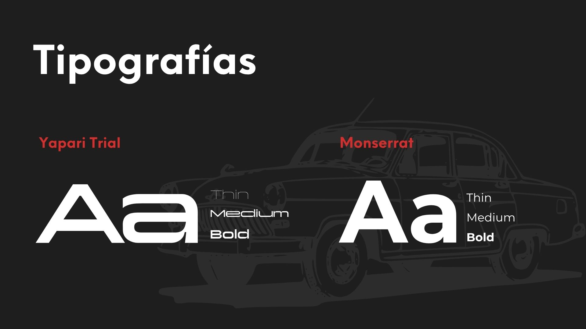
📌 Página 16 del Canva: tipografías
Casos de no uso
El manual también marca lo que no se hace con el logo, para que la marca se mantenga igual en cada pieza.
Cambiar el colorModificar la simbologíaCambiar la proporciónDistorsionar los elementosCambiar la disposición
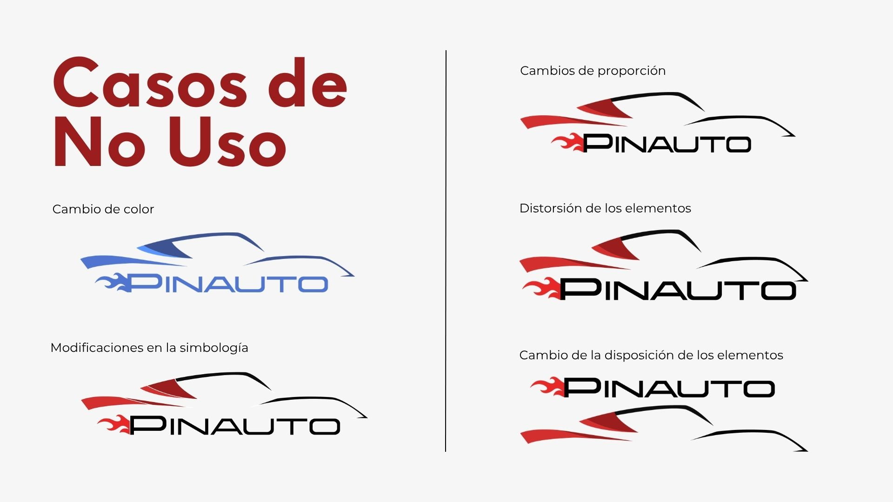
📌 Página 18 del Canva: casos de no uso
05 · Aplicaciones
De la tarjeta al overol
La marca pasa a la papelería, a la dotación del equipo y al aviso del local. El brochure reúne los servicios con sus precios para que el cliente sepa qué esperar antes de llegar.
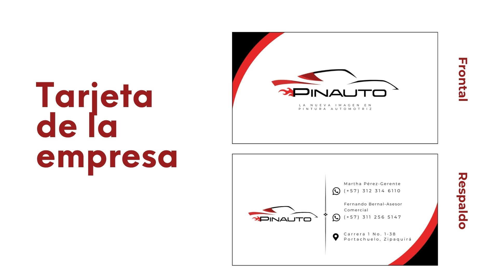
📌 Página 17 del Canva: tarjeta, frontal y respaldo
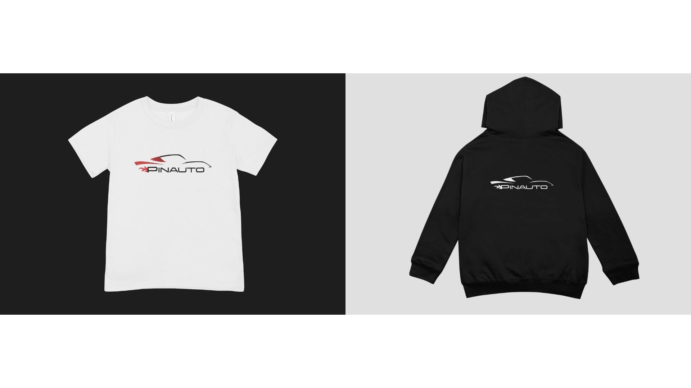
📌 Página 20 del Canva: camiseta y buzo
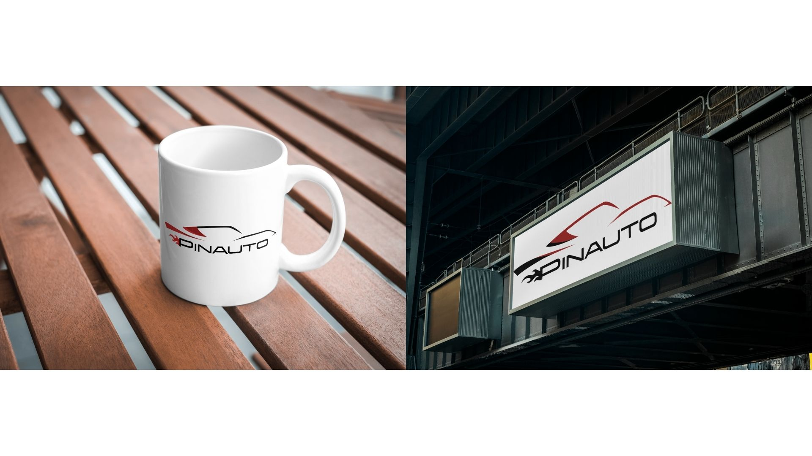
📌 Página 21 del Canva: taza y aviso
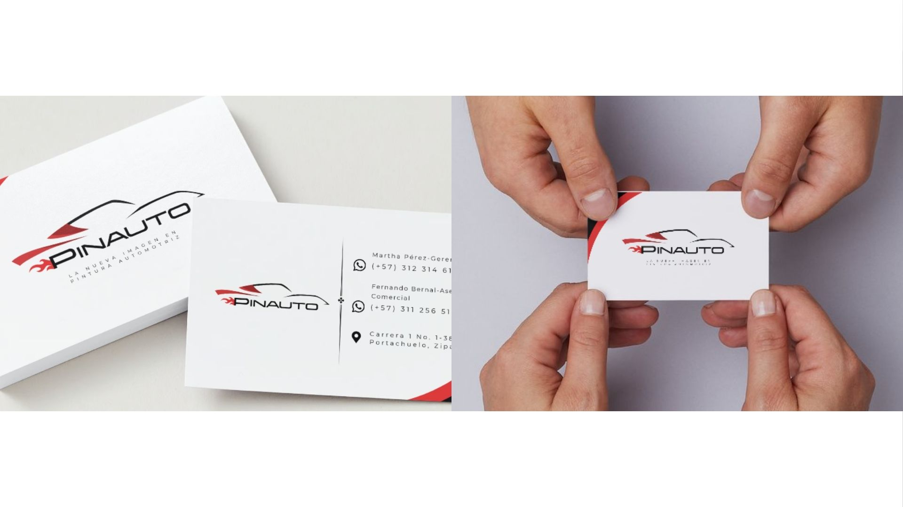
📌 Página 22 del Canva: tarjetas en mockup
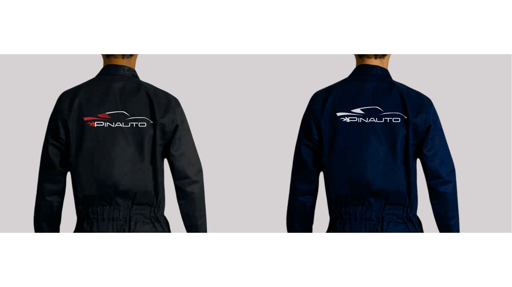
📌 Página 23 del Canva: overoles
Brochure de servicios
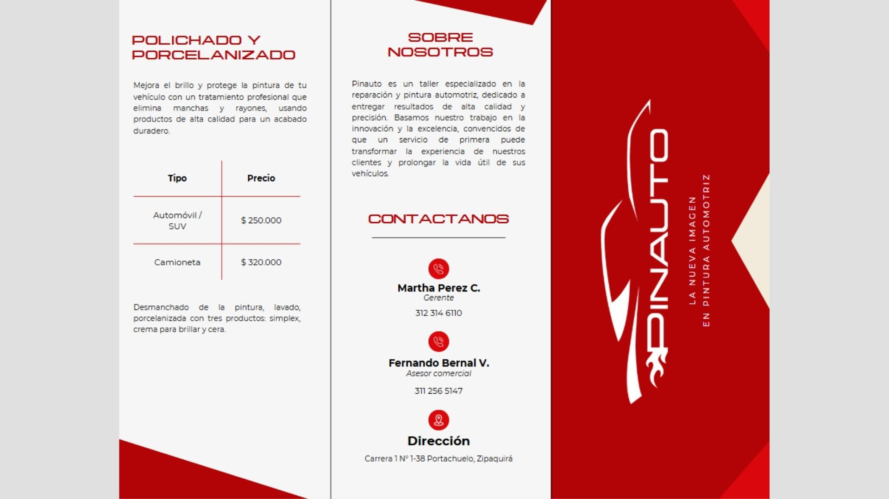
📌 Página 25 del Canva: brochure, exterior
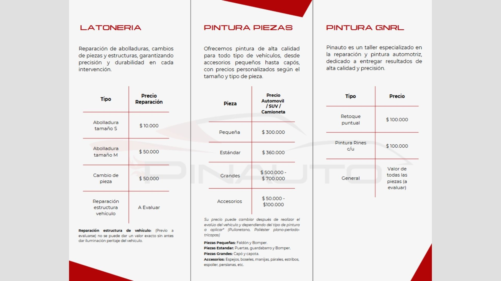
📌 Página 26 del Canva: brochure, interior
06 · Redes sociales
El taller, contado en Instagram
Los posts usan fotos reales del taller en tonos oscuros, el monograma en una esquina y un texto corto que explica cada servicio, como la latonería, el polichado o el porcelanizado. Toca un post para verlo en grande.
Historias y reels
En formato vertical, frases cortas sobre la foto: «Pintando ando», «Esta semana en el taller», «Personal de calidad».
📌 Página 29 del Canva: historias y reels📌 Página 30 del Canva: historias
Caso de estudio · Proyecto propio · Diseño y desarrollo web
Este portafolio: un sitio diseñado como un producto
Diseñé mi portafolio con el mismo proceso que uso con un cliente: reunir todo lo que hago en un solo lugar, simplificar la arquitectura, crear un design system propio y llenarlo de detalles que invitan a explorar.
UX/UI · Diseño web · 2026
Overview
Diseñé este portafolio para expresar mi creatividad y reunir mis pasiones en un solo lugar: el diseño de producto, el 3D, el render, la fotografía y todo lo que disfruto crear. También fue la excusa perfecta para darle vida a Mora, mi marca personal, en un sitio interactivo que invita a descubrirme por partes, faceta por faceta.
Cliente
Proyecto propio
Mi rol
Diseño de producto, UX/UI y desarrollo
Año
2026
Herramientas
Figma, Astro, JavaScript y Claude
4páginas principales
9casos y colecciones
11microinteracciones
2temas, claro y oscuro
01 · Objetivos
Lo que quería lograr
El sitio nació con tres ideas en mente, y todas las decisiones de diseño se midieron contra ellas.
01Reunir mis pasiones en un solo lugar
UX/UI, diseño web, modelado 3D, renderizado, fotografía, motion y diseño gráfico. Todo lo que hago, contado desde el proceso y no solo desde la imagen final.
02Un sitio para descubrir
Interactivo y con personalidad, que invite a la gente a jugar con él y a descubrir mis distintas facetas: rayar, arrastrar, abrir una libreta, pasar hojas.
03Darme a conocer con mi marca
Crear la marca Mora y llevarla a un sitio de fácil acceso, con contacto visible en cada página, un formulario corto y casos que se leen rápido.
02 · Dirección estética
Objetos de oficina en un mundo digital
Siempre tuve la idea de llevar al mundo digital cosas de mi día a día, como lo que hay sobre un escritorio. El concepto es ese: objetos de oficina en una versión más simple y pura. el portafolio vive en una carpeta, la libreta de For fun es un cuaderno que se abre, el formulario es una carta que se mete en un sobre con estampilla y sello, y las notas parecen pósits pegados con cinta.
Carpeta
El hero del Inicio y las cards destacadas.
Cuaderno
La libreta de For fun, con hojas que pasan en 3D.
Pósits y cinta
Las notas y las fotos tipo polaroid.
Sobre y sello
El formulario de Contacto y la página de gracias.
Crayón
Los garabatos y la grilla que se puede rayar.
Postal
La página 404.
La textura
Dos capas fijas recorren las páginas: un grano de ruido en mosaico, con puntos oscuros en el tema claro y claros en el oscuro, y un papel con relieve y fibras suaves debajo de todo. Los degradados morados llevan ruido encima, como una impresión en risografía.
Risografía
Grano
Grilla de 44 px
03 · Arquitectura
Menos páginas, menos clics
El primer mapa tenía cuatro páginas: Inicio, Trabajo, Sobre mí y Contacto. Luego se sumó For fun para los proyectos personales y el sitio llegó a cinco. Al final, Sobre mí se unió al Inicio y quedaron cuatro páginas principales. El objetivo fue simplificar clics para que el recorrido sea más rápido, tanto para quien busca un diseñador para su proyecto como para los reclutadores.
4Plan inicial
5Con For fun
4Hoy
Menú principal
Inicio
Proyectos destacados
Sobre mí
Lo que hago
Cómo trabajo
Con lo que trabajo
Trabajo
UX/UI y diseño web
Branding y video
3D
Casos en popup
For fun
Fotografía
Renders 3D
Proyectos personales
Contacto
Gracias
01
Sobre mí dentro del Inicio
El Inicio ya presentaba quién soy; una página aparte obligaba a un clic más para lo mismo. La hoja de vida también salió: el trabajo habla por sí solo.
02
Casos en un popup
Se leen sin salir de Trabajo y se pasa al siguiente sin volver atrás. Desde el footer, cada proyecto abre su caso directo.
03
De cuatro filtros a tres
UX/UI y diseño web, Branding y video, y 3D. Se elige una categoría a la vez.
04
Contacto sin pasos de más
Sin calendario y con un formulario corto: la versión de tres pasos con plazo y presupuesto pedía demasiado para un primer mensaje.
04 · Secciones
Qué hay en cada página
Inicio
Todo en un recorrido:
Hero
Proyectos destacados
Sobre mí
Lo que hago
Cómo trabajo
Con lo que trabajo
Contacto
Trabajo
Todos los proyectos en una grilla con filtros. Cada card abre su caso de estudio en un popup con sidebar por secciones.
For fun
Una libreta digital con fotografía por hobby, renders 3D y proyectos personales.
Contacto
Un formulario corto dentro de un sobre, el correo para copiar y las redes. Al enviar, lleva a la página de gracias.
05 · Marca Mora
Mora, dentro de un cuadro delimitador
La marca nace del oficio: el apellido aparece dentro de un cuadro delimitador con sus cuatro tiradores, el marco que muestra cualquier programa de diseño cuando algo está seleccionado. Es el gesto del enfoque: lo que el diseñador elige para trabajar. Se repite en el logo, en el nombre del hero y en el ícono del sitio.
Andrés Mora
Ícono y faviconMCOLEstampilla del sobreMSello de envíomoraFooter en semitono
Un color con apellido
Uno de los objetivos de la marca personal era tener un color propio. Aprovechando que mi apellido es Mora, elegí el morado como color distintivo: conecta la marca con mi nombre y con quién soy, y hace que el sitio se reconozca a primera vista.
La voz también es parte de la marca: textos cortos, en español, en primera persona y sin tecnicismos de más. “Más allá de lo ordinario” resume la promesa.
06 · Design System
Un sistema pequeño, aplicado en todo
La primera versión del sistema era oscura, con un morado eléctrico y Space Grotesk con Inter. Se descartó por verse demasiado gamer. La segunda, la vigente, parte de neutros fríos y deja el morado solo para lo que importa.
Color · acento único
Morado#490FE5 · Acento base
Morado profundo#33099E · Hover en claro
Morado brillante#8B6CFF · Acento en oscuro
Tinte#F0ECFE · Fondos suaves
Neutros fríos
Fondo claro#F8F8F8
Superficie#FFFFFF
Carpeta clara#E7E7EC
Carpeta oscura#111116
Fondo oscuro#0A0A0D
Tipografía
Stack Sans Headline · títulos
Diseño de producto digital
Stack Sans Text · cuerpo
Cada proyecto cuenta el proceso, no solo el resultado.
Stack Sans Notch · un acento por vista
Más allá de lo ordinario.
JetBrains Mono · metadatos
UX/UI · DISEÑO WEB · 2026
Espaciado · base de 4 px
space 1 · 4 px
space 2 · 8 px
space 3 · 12 px
space 4 · 16 px
space 5 · 24 px
space 6 · 32 px
space 7 · 48 px
space 8 · 64 px
space 9 · 96 px
Radios
sm · 6
md · 10
lg · 16
xl · 24
pill · 100
Componentes
Ver trabajoHablemosUX/UI y diseño webBranding y video3DCaso de estudio · 2026
Dos temas Claro por defecto y oscuro con el botón de la luna. En oscuro el fondo es casi negro (#0A0A0D) y el acento pasa al morado brillante.
07 · Movimiento
Tres velocidades y una curva
Todo el movimiento del sitio usa tres duraciones fijas y una curva que arranca rápido y frena suave. Toca cada fila para ver la diferencia.
Curva de salida · .16 · 1 · .3 · 1
El elemento llega casi de inmediato y se acomoda despacio. Da sensación de respuesta sin verse brusco.
Reglas
Respeta “reducir movimiento”. Si la persona lo pidió en su sistema, se apagan el cursor propio, la onda del clic, el tilt, el magnetismo y las entradas; lo animado queda quieto.
Solo con mouse. El crayón, el magnetismo y el tilt no se activan en pantallas táctiles.
Una sola vez. Las entradas al hacer scroll no se repiten al volver a subir.
Se pausa fuera de pantalla. El footer en semitono y las animaciones largas no gastan batería cuando no se ven.
08 · Microinteracciones
Pequeños detalles que invitan a explorar
Cada interacción tiene una razón: mostrar lo que sé hacer con motion y código sin estorbar la lectura de los casos. Estos clips están grabados del sitio real.
01Cursor y clic
Una flecha morada con un anillo que crece sobre lo que se puede tocar y se encoge al oprimir; cada clic deja una onda morada que se abre y desaparece.
Todo el sitio · solo con mouse
02Botones magnéticos
El botón se acerca al cursor y el texto lo sigue un poco menos; al pasar, un relleno lo barre de lado a lado.
Botones pill
03Cards que siguen al cursor
Se inclinan en 3D hacia donde está el mouse, con un brillo que se mueve encima y la imagen que cambia de capa.
Trabajo
04Proyectos destacados
La portada pasa de tenue a color completo, asoma una línea de descripción, la flecha gira y la carpeta se inclina con el cursor.
Inicio
05Las dos carpetas
Un clic en la carpeta del hero cambia “Enfoque” por “Portfolio” y otro clic vuelve. La de atrás se gira un poco más y el borde morado refleja el cursor.
Hero del Inicio
06Crayón sobre la grilla
Con el clic sostenido se raya la cuadrícula con un crayón morado granulado; dos segundos después de soltar, se borra solo. Alrededor, garabatos que se dibujan solos invitan a probarlo.
Inicio · solo con mouse
07Texto que se enciende
La frase de “Lo que hago” pasa de gris al color del texto palabra por palabra mientras se hace scroll.
Inicio
08Cortinilla de entrada
“Hey, soy Andrés” y un botón Entrar. El cursor se convierte en un círculo que cubre la pantalla y sale por arriba.
Inicio · una vez por visita
09Libreta en 3D
Un cuaderno de tapa morada que se abre y pasa hojas sobre el lomo, con fotos tipo polaroid, cinta y stickers que se arrastran.
For fun
10El sobre
Al enviar el formulario la hoja entra en el sobre, la solapa se cierra, cae un sello con la M y el sobre sale volando.
Contacto
11Mora en semitono
La palabra “mora” del footer está hecha de puntos que se apartan del cursor con resortes; un clic lanza una onda.
Footer
09 · Navegación
Una navegación intuitiva en cualquier pantalla
Las decisiones de navegación parten del responsive: el mismo menú funciona en escritorio y en celular, siempre visible y siempre a mano, para que moverse por el sitio sea fácil desde el primer clic.
Escritorio · hover magnético y pill de abajoCelular
01
El menú siempre a mano
Cuando la pill de arriba sale de la pantalla, aparece una igual abajo. No hay que volver al inicio de la página para cambiar de sección.
02
Al alcance del pulgar
En celular la pill de abajo queda donde llega el dedo, con “Trabajemos juntos” convertido en una flecha para que quepa todo.
03
Nada escondido
Sin menú hamburguesa: los tres enlaces se ven en todos los tamaños, así que en celular se ahorra un toque.
04
Saber dónde estás
Un punto morado marca la página actual y en hover solo se mueve el texto. En los casos, el sidebar señala la sección que se está leyendo y el footer lleva directo a cada proyecto.
10 · Iteraciones de diseño
Iteraciones de diseño
El Inicio pasó por tres versiones antes de la actual. Cada iteración dejó algo que se quedó y algo que se descartó.
Versión 1Oscura y en inglés
Fondo morado oscuro, un lobo 3D de fondo y “Multimedia engineer” en grande. Se descartó por verse gamer y alejarse del diseño de producto.
Versión 2Rayos de luz
El titular actual sobre un hero a pantalla completa con rayos de luz en WebGL que seguían al mouse. Del sistema v2 se quedaron el color, la tipografía y el tono.
Versión 3El boceto de la carpeta
Mi boceto convirtió el hero en una carpeta con pestaña, la palabra “Portfolio” y la navegación apoyada en una muesca. Primero fue un marco fijo; luego se soltó.
HoyDos carpetas y una grilla para rayar
Dos carpetas una sobre otra que se turnan con un clic, una grilla de 44 px que se puede rayar con crayón y el header con la pill.
Plus Iteraciones sobre iteraciones: For fun
Primero fue un “cuarto oscuro” con piezas colgadas en un tendedero y el cursor como linterna. Antes de llegar a la libreta se probaron un carrete y una espiral 3D.
11 · Aprendizajes
Lo que me deja este proyecto
01Iterar más rápido
Pasar de un diseño a un prototipo funcional en poco tiempo, generando código y diseño a la vez. Cada idea se probó en el navegador real antes de decidir si se quedaba.
02Aprender a simplificar
Es fácil sumar funciones que no son lo que el usuario necesita. El sitio mejoró cada vez que se quitó algo: una página, un filtro, pasos del formulario, la hoja de vida.
03Diseñar con carácter
Muchas microinteracciones no llaman la atención a primera vista, pero cuando el sitio invita a probarlo, la persona raya la grilla, mueve las cards, abre la libreta o manda una carta. Ahí está la personalidad.
Lo que sigue
Nuevos proyectosSeguir nutriendo el portafolio con los casos que vienen, contados con la misma profundidad.
Un gestor propioDesarrollar un sistema interno de administración, un CMS, para subir y editar proyectos sin tocar el código.
En una frase
Este portafolio reúne todo lo que hago y te invita a descubrir mi manera de diseñar y de ver el mundo.
Colección · Modelado 3D
Del patrimonio a la escena: modelado 3D
Arquitectura, arqueología y folclor colombiano, además de escenarios y props, modelados y texturizados en Maya y Substance Painter. Gira, acerca y recorre cada modelo aquí mismo.
Autodesk MayaSubstance PainterSketchfab2023 a 2025
01 · Patrimonio y cultura colombiana
Digitalizar lo que somos
Modelos que llevan al 3D piezas, lugares y leyendas de Colombia, para que se puedan recorrer desde cualquier pantalla.
Proyecto universitario
Pacho, Cundinamarca · 2024
Horno de la Ferrería
La cuna de la industria siderúrgica en Colombia: un alto horno de 9 metros del siglo XIX que produjo hierro para armas, herramientas e industria hasta 1888. Hoy es un sitio histórico y cultural.
Urna usada en la práctica ritual de enterramientos secundarios, característica de la región desde San Agustín y Tierradentro hasta Tamalameque. Texturizada en Substance Painter.